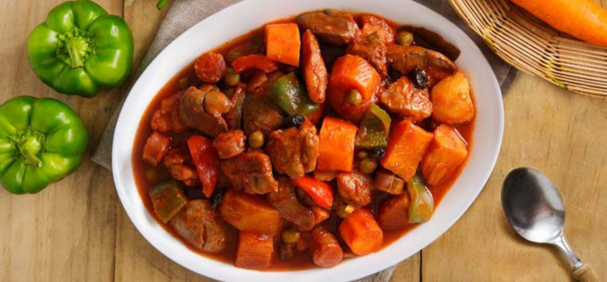

How to Cook Menudo
Ingredients
- 3 tbls Vegetable Oil
- 1 pc Potato
- 1 pc Carrot
- 0.5 Kg Chicken Thigh
- 2 Sachets MAGGI Magic Sarap
- 4 Cloves Garlic
- 1 pc Onion
- 1 pc Red Bell Pepper
- Share and enjoy!
- 1 pc Chorizo
- 0.25 Cup Tomato Paste
- 1 pc Bayleaf
- 1 Cup Water
- 0.5 Cup Green Peas
- 0.5 tsp Ground Pepper
- 2 tbls brown sugar
Cook
- Sauté potato and carrot in 1 tbsp oi. Remove and set aside.
- Season chicken 1 sachet of MAGGI® MAGIC SARAP®. Sauté in oil. Remove and set aside.
- Sauté garlic, onion, red and green bell pepper, chorizo de Bilbao and tomato paste in remaining oil for 5 minutes.
- Pour water and add chicken, potato and carrot and bay leaf. Simmer for 20 minutes. Stir in green peas and raisins. Season with remaining sachet of MAGGI® MAGIC SARAP®, pepper and sugar. Transfer on a serving plate and serve.
